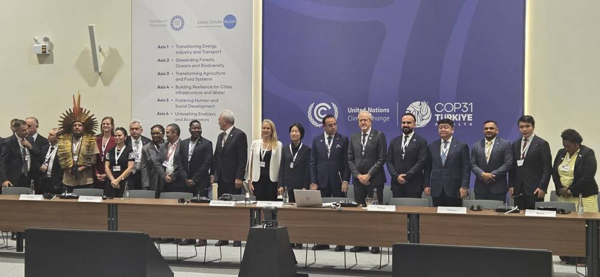

산불 국제공조 행동계획 출범, 24개국 지지

산림청이 기후총회에서 튀르키예·브라질과 '안탈리아 통합산불관리 행동계획'을 함께 띄웠다. 캐나다·영국·일본 등이 지지했고 FAO와의 공동사업 2차기도 소개했다.
대형 산불에 나라끼리 함께 맞서는 '안탈리아 통합산불관리 행동계획'이 제31차 유엔기후변화협약 당사국총회(COP31)에서 출범했다. 한국·튀르키예·브라질이 함께 이끈 자발적 국제협력 구상으로, 산림청은 11월 19일 캐나다·영국·네덜란드·일본 등 24개국이 지지했다고 밝혔다. 총회는 11월 9일 튀르키예 안탈리아에서 막을 올렸다.
행동계획은 산불 예방부터 대비·대응·복구까지 전 주기에 걸쳐 나라 사이에 경험과 기술을 나누고 역량을 키우는 것을 목표로 한다. 출범을 위한 고위급 대화는 16일(현지시간) 열렸고, 참석국들은 기술 이전과 교육훈련 협력을 넓히고 경험을 계속 나누기로 했다. 이현주 산림청 국제협력담당관은 "기후변화로 대형산불 위험이 커지는 상황에서 국제사회의 공동 대응이 무엇보다 중요하다"고 말했다.
산림청은 앞서 14일 산림과 기후 리더 파트너십(FCLP) 장관회의에서 기후위기에 따른 국제 산불 협력을 강조했다. 이 회의에는 장관급 인사 40여 명이 참석했다. 이 파트너십은 2030년까지 전 세계 산림 전용과 토지 황폐화를 멈추고 산림 생태계를 복원하려고 2022년 출범한 정부 간 협의체다. 산림청은 이 자리에서 프랑스, 아시아산림협력기구(AFoCO)와의 산불 협력 성과를 알렸다. 유엔식량농업기구(FAO) 등과 함께 일한 경험도 나눴다.
18일 부대행사는 FAO와 브라질 시민사회단체가 함께 열었고, 참석자들은 통합산불관리를 과학·재원·지역사회와 묶어 넓히는 길을 논의했다. 산림청과 FAO가 함께 하는 산불협력 사업 '통합산림위험관리 메커니즘(AFFIRM)'의 2차기도 이 행사에서 각국에 알려졌다. 이 2차기 사업은 올해 10월 시작됐다.
시민에너지 관점
FAO 부대행사가 지역사회를 산불 관리의 한 축으로 다룬 것처럼, 산불 피해는 산 가까이 사는 주민이 가장 먼저 겪는다. 숲가꾸기에서 나온 나무 부산물을 마을 난방 연료로 쓰고, 산림 인근 마을이 에너지 전환과 산불 예방을 함께 맡으면 감시와 소득을 함께 얻을 수 있다. 국제 행동계획을 함께 이끈 만큼 국내에서도 주민이 산불 예방 계획을 세우는 데 참여할 길이 넓어지길 바란다.
출처: 산림청 2026-11-19 보도자료 「산림청, 기후변화 대응 위한 국제 산불협력 강화」(국제협력담당관실) 원문 보기